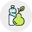

<div id="sidebar-primary-container">
  <a href="#"
     [routerLink]="'/dashboard'">
    
  </a>
  <fw-sidebar-primary-item *ngFor="let item of model"
                           [model]="item"></fw-sidebar-primary-item>
</div>
